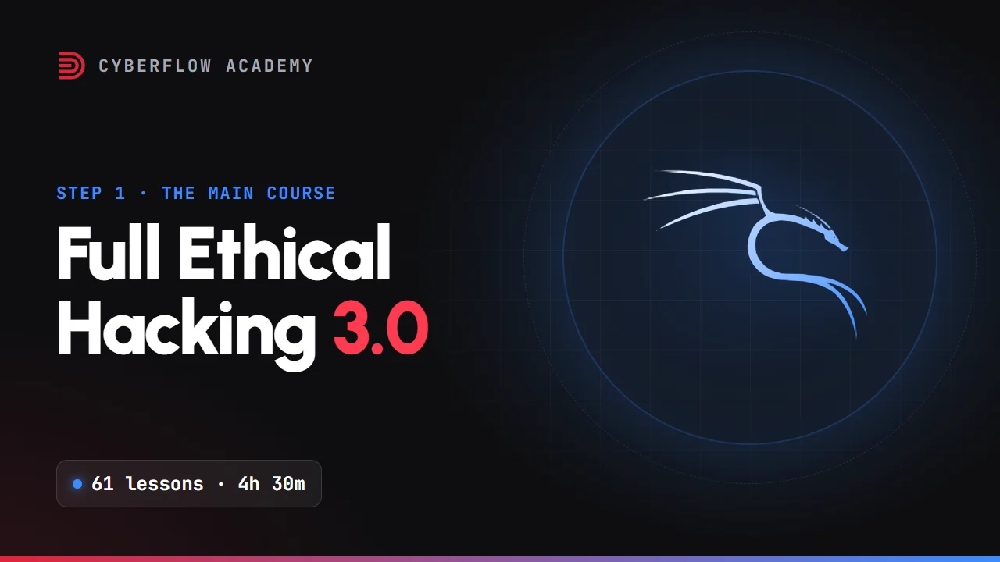
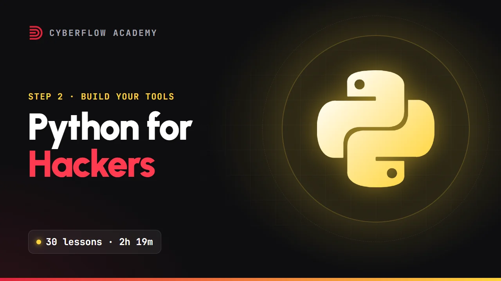
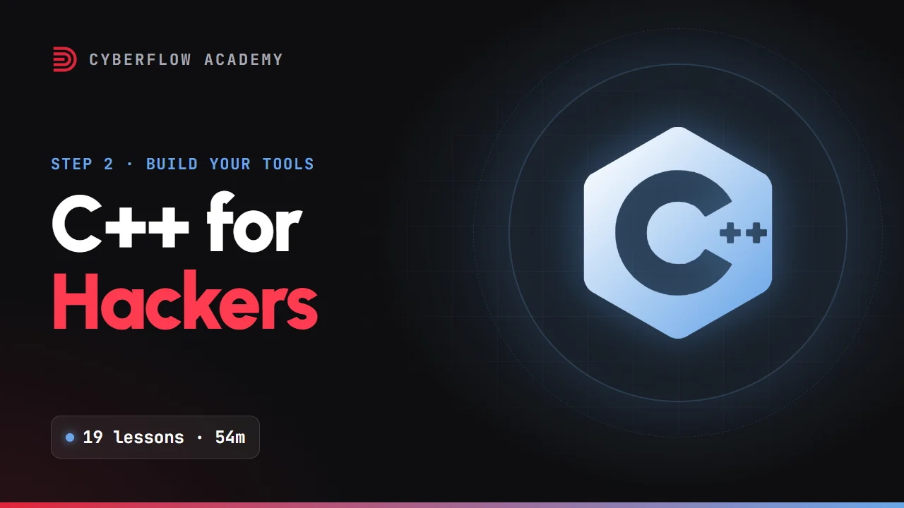
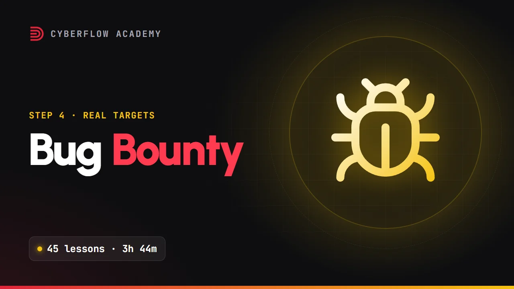
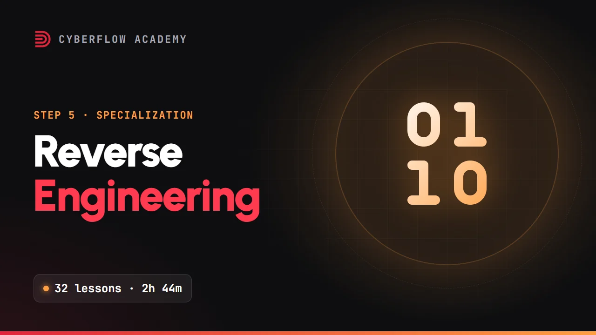
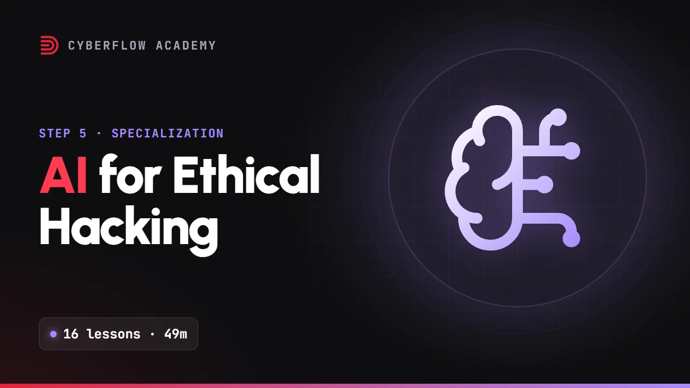
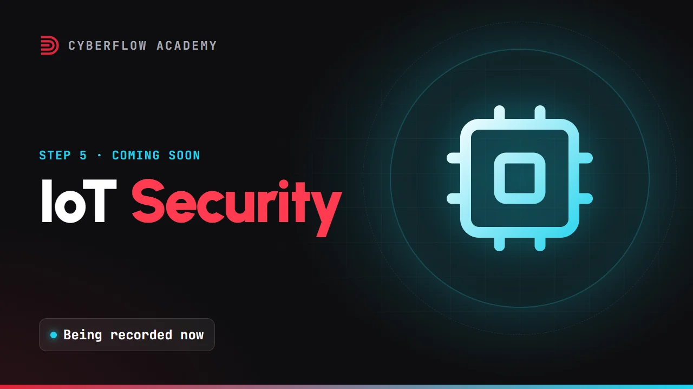

Daily Intel Drops 5 videos
Short videos on one tool or trick at a time.
- Exiftool: Exif Data▶ 7m
- Steganography▶ 8m
- Shodan▶ 4m
- USB-Less Linux Setup▶ 3m
- GhostTrack▶ 2m
the nerdy page 🤓
For when you want to see exactly what you're getting. Respect. Pick any course to see every chapter and lesson inside, in the order I'd take them.
Nothing called that yet. Tell me in the Discord what you want to learn next.
Step 1
The main course. Recon, scanning, exploitation and post-exploitation, all on a lab you build yourself.

Full Ethical Hacking 3.0 NewBuild your own hacking lab, then go through recon, scanning, vulnerability analysis, exploitation, post-exploitation, man in the middle and staying anonymous.See all 61 lessons Advanced Ethical Hacking WiFi hacking from start to finish: sniffing, WEP and WPA/WPA2 cracking, man in the middle, then server-side and client-side attacks. With quizzes along the way.See all 53 lessons
Advanced Ethical Hacking WiFi hacking from start to finish: sniffing, WEP and WPA/WPA2 cracking, man in the middle, then server-side and client-side attacks. With quizzes along the way.See all 53 lessons Step 2
How systems actually work underneath, then writing your own tools.
 Networking+ How networks really work: the OSI model, cables, IPv4 and IPv6, subnetting, protocols and ports, cloud, wireless, security and troubleshooting. Ends with two Network+ practice tests.See all 93 lessons
Networking+ How networks really work: the OSI model, cables, IPv4 and IPv6, subnetting, protocols and ports, cloud, wireless, security and troubleshooting. Ends with two Network+ practice tests.See all 93 lessons 
Python For Hackers Write your own port scanner, vulnerability scanner, ARP spoofer, password sniffer, hash cracker and email scraper. Then 5 practice projects and a final challenge.See all 30 lessons
C++ For Hackers Build three classic tools from scratch in C++: a keylogger, a Windows credentials stealer and a multithreaded port scanner.See all 19 lessonsStep 3
How professionals protect themselves. Most courses skip this part completely.
Step 4
Real targets and real bounty programs, plus the plan for getting your first payout.
 The $1,000 Hacker Playbook The money side of hacking: picking your lane, quick wins, your first bounty and reports that get paid, then freelance pentesting. Comes with report and consulting templates.See all 20 lessons
The $1,000 Hacker Playbook The money side of hacking: picking your lane, quick wins, your first bounty and reports that get paid, then freelance pentesting. Comes with report and consulting templates.See all 20 lessons  Website Hacking Attack websites on your own lab: info gathering, file upload bugs, code execution, LFI and RFI, SQL injection, XSS and brute force. Plus how to fix each one.See all 46 lessons
Website Hacking Attack websites on your own lab: info gathering, file upload bugs, code execution, LFI and RFI, SQL injection, XSS and brute force. Plus how to fix each one.See all 46 lessons 
Bug Bounty Information disclosure, broken access control and IDOR, path traversal, OAuth 2.0, command injection and a lot of XSS. Ends with a 1 hour live bug hunt.See all 45 lessons Hacking Labs: Practice Guided labs in three tiers, from IDOR and SQL injection up to JWT, CORS and SSRF.See all 6 lessons
Hacking Labs: Practice Guided labs in three tiers, from IDOR and SQL injection up to JWT, CORS and SSRF.See all 6 lessons Step 5
Once the core clicks, pick a direction and go deep. From bugs to binaries.

Reverse Engineering Assembly, PE files, the Windows API, debuggers and IDA Pro. Then 5 crackme challenges to prove it.See all 32 lessons OSINT Sock puppets, search operators, finding people, phone numbers and emails, info hidden in images, maps and social media.See all 31 lessons
OSINT Sock puppets, search operators, finding people, phone numbers and emails, info hidden in images, maps and social media.See all 31 lessons  Android Hacking How Android works under the hood, then ADB, intercepting traffic, Frida, MobSF and reversing real apps.See all 19 lessons
Android Hacking How Android works under the hood, then ADB, intercepting traffic, Frida, MobSF and reversing real apps.See all 19 lessons 
AI For Ethical Hacking Prompting for security work, jailbreaks and prompt injection, AI pentest tools, and building your own AI recon agent.See all 16 lessons
IoT Security In progressBeing recorded right now. Members get every lesson the day it drops.See what's out so farBonus
Not courses, but you get all of it too.
Short videos on one tool or trick at a time.
Videos YouTube took down. They live here now.
87 hands-on practice labs across 11 skills.
A bug bounty radar with 960+ programs. It updates on its own.
Payload decoder, assembly annotator and a Linux error reference.
More labs to practice on, right inside Whop.
A recon framework you download and run.
A tool you download and run.
Check a file before you trust it.
PDFs and exclusive write-ups.
Lock down your own PC.
Same idea, for Linux.
A browser that leaks less.
Privacy tools, set up for you.
Ask anything. I answer in there.
Lesson list taken straight from the academy on Nov 17, 2026. New lessons land all the time, and you get every one of them.
Both plans get you everything on this page. The discount is already on the buttons. Prices before Whop’s small fee and local tax.
Then $29 a month or $225 a year. Whop adds a 5% service fee. Cancel any time.
← back to the main page